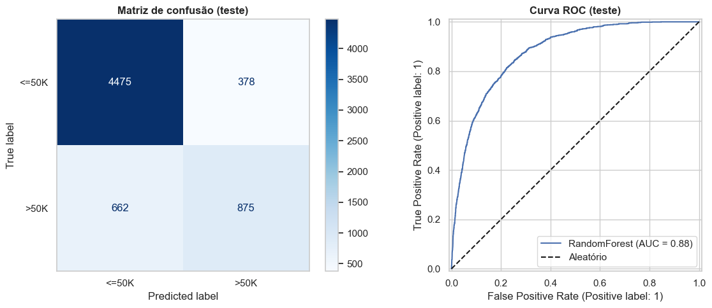

2. Avaliação do melhor modelo no conjunto de teste¶
Agora usamos o conjunto de teste, uma única vez, com o modelo final escolhido apenas por validação cruzada. O GridSearchCV/RandomizedSearchCV já reajustou (refit=True) o melhor pipeline em todo o treino.
Ver código
y_pred = modelo_final.predict(X_test_proc)
y_proba = modelo_final.predict_proba(X_test_proc)[:, 1]
print(classification_report(y_te, y_pred, target_names=["<=50K", ">50K"], digits=3))
print("ROC-AUC:", round(roc_auc_score(y_te, y_proba), 4))
precision recall f1-score support
<=50K 0.871 0.922 0.896 4853
>50K 0.698 0.569 0.627 1537
accuracy 0.837 6390
macro avg 0.785 0.746 0.762 6390
weighted avg 0.830 0.837 0.831 6390
ROC-AUC: 0.8779
Ver código
fig, axes = plt.subplots(1, 2, figsize=(12, 5))
ConfusionMatrixDisplay.from_predictions(
y_te, y_pred, display_labels=["<=50K", ">50K"], cmap="Blues", ax=axes[0]
)
axes[0].set_title("Matriz de confusão (teste)", fontweight="bold")
axes[0].grid(False)
RocCurveDisplay.from_predictions(y_te, y_proba, ax=axes[1], name=melhor_nome)
axes[1].plot([0, 1], [0, 1], "k--", label="Aleatório")
axes[1].set_title("Curva ROC (teste)", fontweight="bold")
axes[1].legend()
plt.tight_layout()
plt.show()
tn, fp, fn, tp = pd.crosstab(y_te, y_pred).values.ravel()
print(f"Verdadeiros negativos: {tn} | Falsos positivos: {fp} | Falsos negativos: {fn} | Verdadeiros positivos: {tp}")

Verdadeiros negativos: 4475 | Falsos positivos: 378 | Falsos negativos: 662 | Verdadeiros positivos: 875
Avaliação do Random Forest v2:
-
Métricas de Desempenho Reportadas:
- Accuracy geral: 0,837 (83,7%)
- Métricas da classe positiva (
>50K):- Precision: 0,698 (69,8%)
- Recall: 0,569 (56,9%)
- F1-score: 0,627
- ROC-AUC: 0,8779 (~0,88)
-
Consistência entre Validação Cruzada e Teste (Generalização):
- O \(F_1\)-score obtido no conjunto de teste (\(0{,}627\)) é altamente compatível com a média observada durante a validação cruzada do Pipeline v2 (\(F_1 = 0{,}6262\)).
- Essa aderência confirma que o ajuste de hiperparâmetros e a seleção do pipeline não causaram overfitting nem vazamento de dados (data leakage), demonstrando que o modelo possui uma capacidade sólida e consistente de generalização para dados inéditos.
-
Análise da Matriz de Confusão e Tipos de Erro:
- Falsos Positivos (\(FP = 378\)): Ocorrem quando o modelo prevê erroneamente que a pessoa ganha
>50K, mas na realidade ela tem renda<=50K(falsos alarmes de alta renda). - Falsos Negativos (\(FN = 662\)): Ocorrem quando o modelo deixa de identificar uma pessoa de alta renda, classificando-a incorretamente como
<=50K. - Tipo de erro predominante: Os falsos negativos foram consideravelmente mais frequentes que os falsos positivos (\(662\) vs. \(378\)). Isso reflete o comportamento conservador do modelo com o limiar padrão de 0,5, priorizando a precisão (acertar cerca de 7 a cada 10 predições positivas) em detrimento de capturar todos os casos reais da classe minoritária.
- Falsos Positivos (\(FP = 378\)): Ocorrem quando o modelo prevê erroneamente que a pessoa ganha
-
Impacto do Desbalanceamento e Interpretação do ROC-AUC:
- Devido ao desbalanceamento das classes (~76%
<=50Ke ~24%>50K), o modelo tende a ser mais cauteloso ao predizer a classe minoritária, resultando em um recall sensivelmente menor para>50K(\(56{,}9\%\)) em relação à classe majoritária (\(92{,}2\%\)). - Contudo, o ROC-AUC de 0,8779 atesta uma excelente capacidade discriminativa global. Como a métrica é independente do corte rígido de probabilidade de 0,5, ela evidencia que, em cerca de 87,8% das vezes, o modelo atribui uma probabilidade de renda alta maior a um indivíduo que de fato ganha
>50Kem comparação a um que ganha<=50K. Se a aplicação de negócio exigisse a captura de um número maior de indivíduos de alta renda, bastaria calibrar o limiar de decisão (threshold tuning) para um valor inferior a 0,5, reduzindo os falsos negativos.
- Devido ao desbalanceamento das classes (~76%